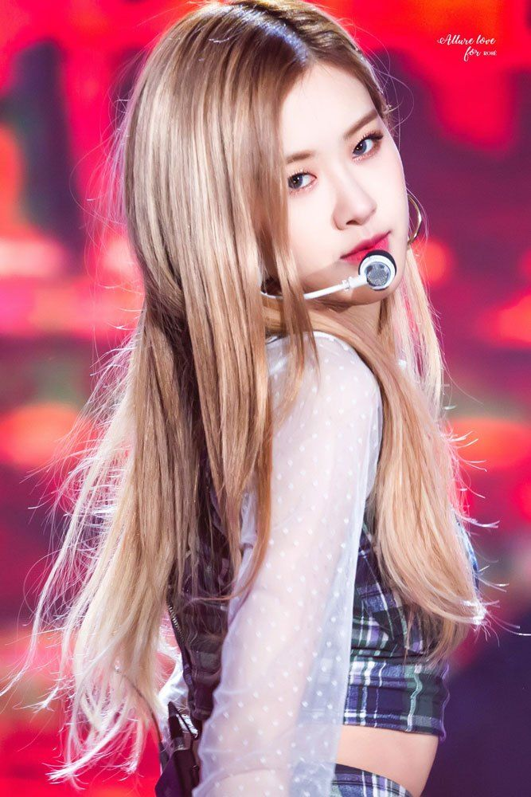
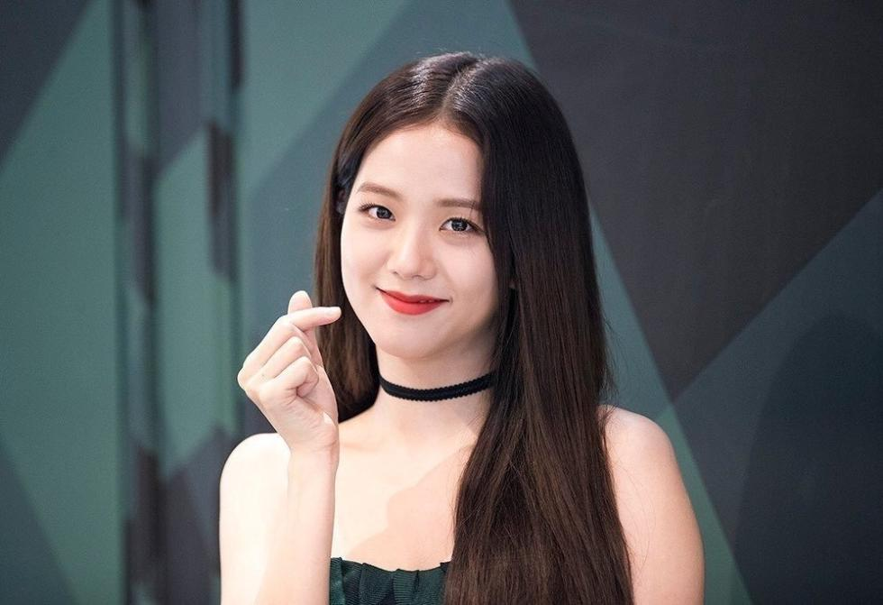

QUI SONT BLACKPINK?
BLΛƆKPIИK IN YOUR AREA
BLΛƆKPIИK IS SPRANDING THEIR POWER ACROSS THE WORLD
블랙핑크는 너의 지역에 있다
LE GIRLS's BAND BLΛƆKPIИK
Rosé

Roseanne Park connue sous le nom de Rose est la chanteuse principale et danseuse secondaire du groupe .Elle a passé son enfance dans la ville de Melbourne en Nouvelle Zélande et est d’origine New Zélandaise et coréenne . Elle s’est fait connaître pour sa voix unique et déménage ainsi en corée pour intégrer YT Entertainment .
Jisoo

Kim Ji-soo nommé aussi Jisoo est une chanteuse ,danseuse et modèle sud coréenne du groupe. Elle intègre YT Entertainment en 2011 avec un début difficile .En effet celle-ci a débuté dans des films publicitaires , des dramas et dans une émissions de télévisions .
Jennie
Jennie Kim appelée aussi Jennie est la chanteuse , danseuse et rappeuse principale du groupe . Lors de l’audition 2010 le groupe YT Entertainment la recrute et rejoint le groupe Black Pink .Par ailleurs elle a effectué beaucoup de collaborations avec des marques prestigieuses.
Lisa
Lilisa Manoban connue sous le nom de lisa est aussi la chanteuse principale , rappeuse secondaire ,danseuse d’origine thaïlandaise .De plus elle a été l’unique personne sur 4000 candidates à être recrutées lors de l’audition YT Entertainment en Thaïlande .
LA POPULARITE DE BLACKPINK REMISE EN QUESTION?
La popularité de BLACKPINK est toutefois remise en question du fait que leur agence semble rencontrer des problèmes majeures et sont sur le point de faire faillite à cause des problèmes liés à leur groupe principal: BIG BANG mais aussi le fait que leur chiffre d’affaire est en baisse. Seul BLACKPINK est leur groupe faisant des vues et qui leur rapporte ainsi du capital. Les débuts SOLO de Rosé prévues en 2018 n’ont toujours pas vu le jour, le rythme n’est plus régulier, leur dernier MV remonte à 9mois, les problèmes qu’à rencontré JENNIE s’explique par une activité trop intense, les agences demandent beaucoup à leur artistes, et les idoles de kpop sont soumies à des critères de beautés où ils/elles doivent être minces, avoir de longues jambes, la peau blanche afin pour ne pas être critiqué(e)s et être apprécié(e)s par leur public. La kpop est donc un univers certes remplis de bonne choses bien que le côté sombre de la kpop ne ressort pas assez. Lorsqu’on regarde la “Jennie de 2016”, elle dégageait en elle une aura remplie de joie et d’énergie alors qu’il y a peu de temps, la Jennie de 2016 s’est complétement éteinte au point d’en déprimer et devenir très mal. Heuresement, cette période s’est achevée et les BLACKPINK sont de nouveau prête pour faire revivre la flamme qu’il y avait en eux.
BLΛƆKPIИK